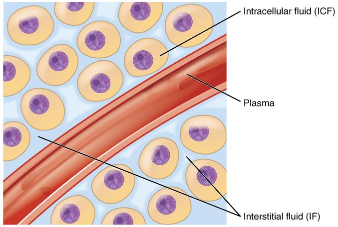
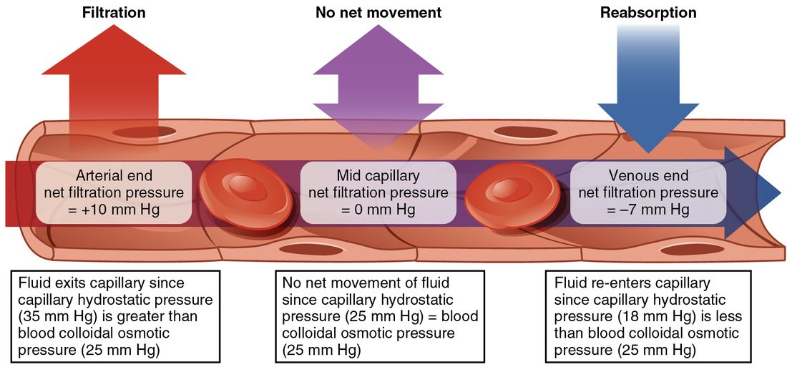

Capillary exchange is how blood and your cells trade materials across the thin walls of capillaries. Two separate processes do the work. Diffusion moves individual solutes, such as oxygen and glucose, each down its own gradient. Bulk flow moves fluid: capillary filtration pushes plasma fluid out, and capillary reabsorption draws it back. The balance between them is set by four pressures, the Starling forces. This page covers both processes, works through net filtration pressure step by step, and explains edema, the swelling you get when that balance fails.
Where blood and cells trade
Pick one muscle cell in your calf. It sits a few hundredths of a millimeter from the nearest capillary. Every oxygen molecule it uses crossed the capillary wall, then the interstitial fluid around the cell, then the cell's plasma membrane. Every carbon dioxide molecule it makes went the other way.
That traffic can only happen in capillaries. Arteries and veins have walls several cell layers thick. A capillary wall is a single layer of endothelium, one flat cell thick, sitting on a thin basement membrane. Capillaries also give blood the most time to exchange: the total cross-sectional area of all your capillaries is so large that blood moves through them slowly, taking roughly a second to cross one. Materials pass between plasma and your cells through the interstitial fluid that bathes them (Figure 1).

Keep the two processes apart in your mind from the start:
- Diffusion moves solutes. Each substance moves down its own concentration gradient, independent of the others. It moves huge amounts in both directions.
- Bulk flow moves a volume of fluid, water together with its small solutes, driven by pressure differences. It sets how much fluid sits in your plasma versus between your cells.
Diffusion across capillaries
At rest, your muscle cells use oxygen steadily. That keeps the oxygen concentration in the interstitial fluid lower than in the blood arriving in the capillary, so oxygen diffuses out of the blood. The cells make carbon dioxide, which keeps its concentration higher in the interstitial fluid than in the blood, so it diffuses in. Glucose moves out and cell wastes move in by the same rule. No pump is involved in any of this. The gradients exist because cells keep using some substances and making others.
Diffusion across capillaries is this net movement of each solute between plasma and interstitial fluid, down its own concentration gradient. Which route a solute takes through the wall depends on what it is:
- Lipid-soluble substances (oxygen, carbon dioxide, many anesthetic gases) dissolve in the phospholipid bilayer and pass straight through the endothelial cells, anywhere on the capillary surface.
- Small water-soluble substances (glucose, amino acids, sodium and other ions, water itself) cannot cross the bilayer easily. They pass through narrow water-filled gaps between neighboring endothelial cells, called intercellular clefts (inter- = between), and, in fenestrated capillaries, through pores in the cells themselves.
- Large molecules such as plasma proteins are mostly held back. A small amount crosses inside vesicles: the endothelial cell takes the molecule in by endocytosis on the blood side and releases it by exocytosis on the tissue side. This route is called transcytosis (trans- = across, cyt/o = cell, -osis = process).
The factors that set any diffusion rate apply here. The gradient is kept steep because cells keep consuming and producing. The surface area is enormous: the capillaries of an adult cover hundreds of square meters. The diffusion distance is short, because almost no cell lies more than a few cell widths from a capillary. During exercise, more capillaries in a working muscle fill with blood. That adds surface area and shortens the distance from each cell to the nearest open capillary, so diffusion speeds up.
Capillary type sets how leaky the wall is. Continuous capillaries, in muscle, skin and brain, allow only small solutes through their clefts, and in the brain even the clefts are sealed. Fenestrated capillaries, in the intestine, endocrine glands and kidneys, add pores and pass small solutes much faster. Sinusoids, in the liver and bone marrow, have gaps wide enough for plasma proteins to escape.
Bulk flow: filtration and reabsorption
Diffusion trades solutes, but it does not decide how much fluid stays in your blood. That is the job of bulk flow. Squeeze a garden soaker hose and water seeps out along its length, carrying whatever small particles fit through the holes. A capillary behaves in the same way.
- Capillary filtration is bulk flow of fluid out of the capillary into the interstitial fluid, driven by pressure. It is filtration, as you met it in passive transport: water and small solutes pass through, and plasma proteins are held back.
- Capillary reabsorption is bulk flow of interstitial fluid back into the capillary.
Whether fluid moves out or in, and how fast, depends on four pressures. Together they are called the Starling forces, after Ernest Starling, the physiologist who described them in 1896.
The four Starling forces
Two of the four are hydrostatic pressures, which push fluid. Two are colloid osmotic pressures, which pull fluid. Each exists on both sides of the wall, inside the capillary and in the interstitial fluid (Figure 2).
The pushing forces: hydrostatic pressures
Capillary hydrostatic pressure (CHP; hydro- = water, -static = standing), also called blood hydrostatic pressure, is the pressure of the blood against the inside of the capillary wall. It is what is left of arterial pressure after blood has passed through the high resistance of the arterioles. It pushes fluid out. In a typical capillary in the skin of your hand, it is about 35 mm Hg at the arteriole end and falls to about 15 mm Hg at the venule end, because blood loses pressure as it flows against the capillary's own resistance.
Interstitial fluid hydrostatic pressure (IFHP) is the pressure of the fluid in the spaces between your cells. It pushes fluid into the capillary when it is positive. In most loose tissues it is close to zero, often a few mm Hg below atmospheric pressure. It rises when fluid collects in a tissue that cannot stretch.
The pulling forces: colloid osmotic pressures
A colloid (Greek kolla = glue, -oid = like) is a solution of very large molecules, such as proteins. Colloid osmotic pressure, also called oncotic pressure (Greek onkos = mass), is the osmotic pressure produced by dissolved molecules too large to cross the wall between two fluids. It pulls water toward the side with more of them.
Why only proteins count here? Sodium, chloride, glucose and other small solutes cross the capillary wall freely through the clefts. Their concentrations end up almost the same in plasma and interstitial fluid, so they create no lasting osmotic difference across a capillary wall. Plasma proteins cannot cross easily, so they are the solutes that make an osmotic difference.
- Blood colloid osmotic pressure (BCOP) is the oncotic pressure of plasma, about 25 mm Hg. Albumin, the most abundant plasma protein, supplies most of it. It pulls fluid into the capillary. Because protein concentration barely changes along a capillary, BCOP stays nearly constant from one end to the other.
- Interstitial fluid colloid osmotic pressure (IFCOP) is the oncotic pressure of the small amount of protein in the interstitial fluid. It pulls fluid out of the capillary. It varies from tissue to tissue and is much smaller than BCOP.
Net filtration pressure
Net filtration pressure (NFP) is the sum of the four forces: the pressures favoring filtration minus the pressures favoring reabsorption.
NFP = (CHP + IFCOP) − (BCOP + IFHP)
You can also group it by type: NFP = (CHP − IFHP) − (BCOP − IFCOP). The first bracket is the hydrostatic difference pushing out; the second is the oncotic difference pulling in. A positive NFP means filtration. A negative NFP means reabsorption. The larger the number, the faster fluid moves, for a given wall.
Worked example 1: the arteriole end of a capillary
A capillary near its arteriole end has these pressures: CHP = 35 mm Hg, IFHP = 0 mm Hg, BCOP = 25 mm Hg, IFCOP = 3 mm Hg. Find the net filtration pressure and the direction of fluid movement.
- Add the pressures that move fluid out: CHP pushes out and IFCOP pulls out. 35 + 3 = 38 mm Hg outward.
- Add the pressures that move fluid in: BCOP pulls in and IFHP pushes in. 25 + 0 = 25 mm Hg inward.
- Subtract inward from outward: NFP = 38 − 25 = +13 mm Hg.
- Read the sign. The result is positive, so fluid filters out of the capillary into the interstitial fluid.
Worked example 2: the venule end, and what the sign means
Near the venule end of the same capillary, CHP has fallen to 15 mm Hg. The other three forces are unchanged: IFHP = 0, BCOP = 25, IFCOP = 3 mm Hg.
- Outward: CHP + IFCOP = 15 + 3 = 18 mm Hg.
- Inward: BCOP + IFHP = 25 + 0 = 25 mm Hg.
- NFP = 18 − 25 = −7 mm Hg.
- Read the sign. The result is negative, so this calculation predicts reabsorption: fluid moving back into the capillary.
Hold on to that result. The next section explains why, at steady state, most capillaries do not actually keep reabsorbing fluid at their venule ends, even though a calculation with these textbook values says they should.
Worked example 3: low plasma protein
A person with long-term liver disease makes too little albumin, and their BCOP falls to 15 mm Hg. At the arteriole end, CHP = 35, IFHP = 0, IFCOP = 3 mm Hg.
- Outward: 35 + 3 = 38 mm Hg.
- Inward: 15 + 0 = 15 mm Hg.
- NFP = 38 − 15 = +23 mm Hg, compared with +13 mm Hg in Worked example 1.
- Interpret: with less protein holding fluid in the blood, filtration at this point is almost twice as fast. More fluid leaves the plasma than before.
What really happens along a capillary
For about a century, textbooks taught that capillaries filter at the arteriole end and reabsorb most of that fluid at the venule end, as Worked example 2 suggests. Direct measurements since the 1990s showed that picture is wrong for most tissues at steady state. The current model is called the revised Starling principle, and it turns on the glycocalyx.
The glycocalyx is the real filter
The inner surface of every capillary is coated with a glycocalyx, a dense layer of sugar-bearing proteins and chains attached to the endothelial cells. This layer, not the whole wall, is what holds plasma proteins back. So the oncotic pressure that matters on the tissue side is not the protein level of the interstitial fluid in general. It is the protein level of the thin layer of fluid just beneath the glycocalyx, inside the clefts between endothelial cells.
Filtered fluid streams outward through the clefts. That stream is nearly protein-free, and it keeps washing out the tiny space beneath the glycocalyx. So the effective IFCOP in that space stays near zero, and nearly the full plasma oncotic pressure opposes filtration.
Why reabsorption does not last
Now suppose CHP falls low enough that fluid starts to flow inward through a cleft. The outward stream stops, so it no longer washes the space beneath the glycocalyx. Interstitial proteins diffuse into that space, its oncotic pressure rises, and the inward pull weakens. Within minutes, the inward flow fades toward zero. Reabsorption shuts itself off.
The result, shown in Figure 3, is that in most tissues fluid filters out along almost the whole length of the capillary. Filtration is brisk near the arteriole end and very slow near the venule end, but at steady state it does not reverse.
Where the filtered fluid goes
If capillaries filter along their whole length, the fluid has to go somewhere, or your tissues would swell steadily. It leaves through a second set of vessels.
So the fluid circuit is: out of the blood capillaries by filtration, through the interstitial fluid, and back to the blood by a separate drainage route. In a day, several liters take this route.
When reabsorption does happen
- For a limited time after capillary pressure falls suddenly. After blood loss, or when arterioles constrict strongly, CHP drops below the effective oncotic pull. Fluid moves from the interstitial fluid into the blood until the proteins under the glycocalyx build up and stop it, within minutes. After that brief inward flow stops, the capillaries keep filtering less than they did before the fall, while the separate drainage route keeps returning fluid at its old rate. So the plasma keeps gaining fluid for hours. You will see this again as part of how you compensate for bleeding.
- Continuously in a few special beds, such as capillaries in the kidneys and the intestinal lining. There, epithelial cells keep pumping salt and water into the tissue around the capillaries. That steady inflow sweeps interstitial protein away and keeps interstitial pressure high enough to drive fluid into the blood.

What changes each force
Once you know the four forces, you can predict the effect of almost any change by asking which force it moves.
Arterioles and venous pressure change CHP
Arterioles set how much blood, and how much pressure, reaches a capillary bed. When the arterioles feeding a bed constrict, more pressure is lost before blood reaches the capillaries, so CHP falls and filtration slows. When they dilate, CHP rises and filtration speeds up.
A rise in venous pressure raises CHP more than an equal rise in arterial pressure does. The arterioles' high resistance sits between the arteries and the capillaries and absorbs much of any arterial change. No such resistance sits between the capillaries and the veins, so a rise in venous pressure passes back into the capillaries almost fully. Standing still is the everyday example. When you stand without moving, gravity adds the weight of the column of blood above your ankles, and venous pressure at your ankles can reach about 90 mm Hg. Capillary pressure in your feet rises with it, filtration speeds up, and after a few hours your shoes feel tight. Walking brings the pressure down, because the skeletal muscle pump empties the leg veins with each step.
Plasma protein changes BCOP
Less plasma protein means less inward pull and more filtration, as Worked example 3 showed. Albumin falls when the liver makes too little, when the diet has too little protein, when damaged kidneys leak protein into urine, or when large burns let plasma seep from the skin surface.
Wall permeability changes the oncotic gradient
During inflammation, histamine and related chemicals widen the gaps between endothelial cells. Plasma proteins leak out, so interstitial protein rises and the oncotic difference that holds fluid in the blood shrinks. Fluid filters out faster. The same chemicals also dilate the arterioles feeding the bed, which raises CHP there and adds to the effect. This is why a sprained ankle or an insect sting swells within minutes.
Edema
Edema (Greek oidema = swelling) is an excess of fluid in the interstitial spaces. It appears when fluid filters out of capillaries faster than it drains away. Press a thumb into swollen skin over the shin for a few seconds, and a dent may stay after you lift it. The pressure pushed the free interstitial fluid aside, and it takes time to flow back. This is pitting edema.
Edema can be local, such as a swollen sprained ankle, or systemic edema, spread through the body, which usually shows first in the feet and ankles when you are upright, and over the lower back when you lie in bed. Every cause works through one of the Starling forces or through drainage:
| What changes | Example | Effect on filtration |
|---|---|---|
| CHP rises | Standing still for hours; a clot blocking a deep leg vein; a right ventricle that cannot pump out all the blood returning to it; too much fluid given by IV | More pressure pushes fluid out |
| BCOP falls | Liver disease; a protein-poor diet; kidneys leaking protein; large burns | Less protein pulls fluid back |
| Wall becomes leaky | Inflammation after injury, an insect sting or infection | Proteins escape, so the oncotic difference shrinks |
| Drainage is blocked | Surgery or scarring that damages the drainage vessels | Filtered fluid cannot leave the tissue |
Edema is more than a cosmetic problem. Fluid between the cells lengthens the distance oxygen and nutrients must diffuse from the capillary, so swollen tissue heals slowly and its skin breaks down more easily.
Summary
Diffusion across capillaries moves each solute down its own gradient: lipid-soluble ones through the endothelial cells, small water-soluble ones through clefts and pores. Bulk flow moves fluid, and its direction is set by the Starling forces: capillary hydrostatic pressure pushes fluid out, blood colloid osmotic pressure pulls it in, and the two interstitial forces are small. In most tissues fluid filters out along almost the whole capillary and returns to the blood through a separate drainage route; exams still expect reabsorption at the venule end. Edema forms when capillary pressure rises, plasma protein falls, the wall leaks, or drainage is blocked.